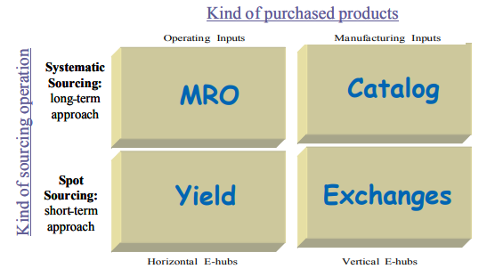

Prior to the Internet, the concept of virtual organizations had existed, but there were several barriers to their becoming a reality according to Upton and McAffe (1996).
According to these authors, within the concept of a virtual organization, a single factory could be replaced by a network of countless manufacturers, each of them doing what they knew best how to do. There are sectors where these networks can be identified, such as within the textile and automobile industries.
In many cases, however, the virtual organization cannot be made concrete. Upton and McAffe posit three requirements for a virtual factory: that it be capable of incorporating partners at anystage of relationship, that it be able to include partners at all levels of sophistication in IT, and that it be capable of providing all the required functionalities. Further, according to these authors, only IT applications based in the Internet can encompass the entire spectrum defined by the three above requirements.
Chesbrough and Teece (1996) allege that virtual business has advantages over traditional, vertically integrated business with regard to participation in a market where one can freely seek out purchasers and vendors of goods and services. On the other hand, as benefits increase, the risks, mostly related to growing problems with coordination, are greater,
Within this perspective of virtual integration via IT application, it is necessary to clarify the role of ERP, EDI, and the Internet.
While EDI and the Internet have made commercial transactions among businesses possible via electronic means, one must distinguish one from the other. EDI permitted an interconnection of businesses via IT, using telephone connections, private networks and dedicated information systems which must be dedicated and installed at each new company that is connected. This was therefore a case by case connection of defined and previously contracted partners. Because it is based in dedicated telecommunications applications and infrastructure, it presented a good level of security, even though its cost was high.
The Internet, in turn, is based on an open protocol, which was conceived to be tolerant of errors due to the use of redundant paths, with the idea of being a public network (anyone can access it) of worldwide scope. It permits continued growth and the adherence of new participants without high cost. The level of security is lower, but the entry and operation are much lower and its coverage is much greater.
Strategies For The New Economy And Dynamic Competitive Environment
The coverage of integration resulting from IT applications, involving the use of ERP, EDI, and the Internet can be seen in Figure 7.2. ERP includes information from the environment of a company (or sometimes a corporation). EDI allows for the exchange of information with some purchasers and providers who have specific contracts signed for this purpose. Finally, the Internet allows for the extension of the integration of the chains of production, including those of worldwide coverage (Chandrashekar & Schary, 1999; Gereffi, 2001).
In addition, it should be highlighted that there is interaction among these kinds of IT applications. Experience with EDI created bases for the B2B, while the growing use of ERP systems that while integrating the various areas of the organizations and standardizing information processing, facilitated business integration in the local as well as the worldwide environment (Laurindo & Pessôa, 2001).
However, it must be stressed that it is not just in buying and selling transactions that the Internet can have an important impact on businesses, since the range of IT applications via the Internet involving many business relations is growing every day.
Hameri and Nihtilä (1997) emphasize Internet use in new product development. They cite the case of a large project involving hundreds of people and many companies and research institutes in which the Internet played a crucial role. Thanks to its use, project participants in different places had access to all the relevant information: engineering plans, three-dimensional models, lists of parameters, results of prototype tests, and other technical engineering information
All the project team members could also access information on the project structure, timetable, and minutes from meetings, and could participate in discussion groups. They note that the Internet was used primarily to share information, rather than in an attempt to reinforce collaboration among the different groups. Internet use also emphasized the importance of milestones to coordinate the different teams’ participation in the project, which can be seen in the increase of sharing files on dates close to the milestones.
The concept of virtual organization can be extended to the entire supply or value chains (or value systems in the terminology of Porter & Millar, 1985), also having the use of IT and especially the Internet as a basis.
Chandrashekar and Schary (1999) underscore that the very notion of chains (originally in the text they treated supply chains, but this can be extended to chains of value or chains of production in general) contains a virtual component, since it involves different organizations. For them, virtual chains involve systems of production and distribution that utilize formal physical structures among different organizations, with the virtual component deriving from flexibility in the formation of networks using rapid real-time communication via IT. Members are often just temporary and frequently enter the chain for specific projects, without being known to all network participants.
These same authors list the characteristics of a virtual chain:
• operation in real-time in response to consumer orders;
• organization in terms of dominant tasks, instead of general competencies of a functional or organizational nature;
• flexible responses to changes in requirements of the market or consumers;
• complementariness of competencies in an orientation by processes;
• direct targeting of the market.
They further point out that such virtual chains operate by means of interrelationships based on reciprocity among complementary businesses, combining partnership for aggregated value and cooperation to administer the flow of products
For them, the governance characteristic of this chain is one of the near autonomy of its members, which is configured more like a federation than a hierarchical organization. The virtual chain combines a structure based in IT with temporary organizations, usually organized by a dominant organizations (a broker) who involves the temporary partners in specific tasks or projects (a “meta-organization”).
Virtual chains have a modular structure which can be defined as the capacity to create goods or complex processes based on small subsystems that can be independently designed but that function together as a whole (Baldwin & Clark, 1997).
As positive aspects characteristic of these virtual chains, Chandrashekar and Schary (1999) highlight the orientation toward consumers and products, the opportunity for this orientation to direct production and distribution of goods in several chains, the orientation toward specific tasks and rapid responses. Additionally, they emphasize the flexibility in choice of partners for production and distribution.
Nevertheless, they also point out some negative aspects, such as the focus on the short-term, which makes longer-term horizontal partnerships more difficult, and can generate problems of trust, given the transitory nature of these relationships.
As seen in Chapter III, Gereffi (2001) identified the existence of three kinds of global chains of production according to the agent who exercises governance of the chain. Initially he identified the chains directed by the producer (producer-driven chains) and those directed by the buyer (buyer-driven chain),
later added the chains of production directed by the Internet (internet-oriented chains) whose characteristics are listed in Table 7.1 and which will be discussed in the following.
The Internet is the basis ofe-commerce and ofe-business which for Gereffi are concepts that go beyond the technological aspect, since they make possible profound changes in the organization of business, in market structure, in governmental regulation, in human experience and finally in the competitive dynamics of global chains.
As seen previously, the two most important forms of electronic commerce are business-to-consumer — B2C or business-to-business — B2B.
B2C markets have to do with the transfer of goods and services to individual consumers, i.e., it is a retail model. B2B markets refer to procurement (research to acquire goods, prices and suppliers), logistical and the administrative processes among companies, therefore this is a model of supply chain. The volume of transactions on the B2B is much greater than on the B2C, corresponding to 80% of what is marketed via e-commerce, whose total was US$401 billion in 2000 (Gereffi, 2001).
According to this same author, the potential that the Internet has to transform the global chains (producer-driven as well as buyer-driven) is due to two factors:
• it permits the creation of economies of scales and at a level of efficiency that was not possible formerly;
• it makes possible radical change in the structure of business, exercising a “pull” instead of a “push” effect on production, replacing stock withinformation that make production possible, and expediting items only when there is a real demand by consumers.
information that make production possible, and expediting items only when there is a real demand by consumers.
This last aspect appears to be a long-term trend in many industries, since there are advantages in this model of producing against orders (build to order), allied with a focus on customer satisfaction, such as the case of Dell in Chapter I. The strategy of pushing in supply-chain management (SCM) is imbedded in concepts well disseminated in the business environment, such as mass customization, lean production, and lean retailing.
The organizational chain of the Internet involves service providers, producers of hardware and software, needed to make viable the grand worldwide network which interconnects millions of computers and thousands of servers, as shown in Table 7.2.
However, this new form of command of the global chains proposed by Gereffi (2001) is questioned by Humphrey et al. (2003), among others, who defend the position that while the Internet has had an important role in global commerce, it retains the preexisting governance structures.
While the Internet has made direct sales to consumers possible, thus eliminating the need for some kinds of intermediation, Gereffi stresses that one of the prime effects attributed to the Internet has been the appearance of new forms of electronic intermediation that have important impact on business strategies.
Upton nd McAffe (1996) stress that information brokers appeared with the Internet. They do the integrating that makes the existence of virtual factories possible. These intermediaries perform an important function in the electronic markets.
For Ehrens and Zapf (1999) these new intermediaries are the “metamediaries” who go beyond linking buyers and providers, and make services available to facilitate their transactions. Gereffi (2001) created another, similar term to name the players who carry out this role: “infomediaries”.
In the context of B2C, Gereffi understands infomediaries to be the companies that provide on-line access to consumers, while they collect valuable information about their consuming habits (which is the basis of the CRM systems that
we will see soon). Normally, these infomediaries in the B2C represent theinterests of consumers who are to attain the advantages of using the Internet.However, they are also associated with producers, vendors and traditional intermediaries. In B2C, there are dominant infomediaries, such as AOL, Yahoo! (in Brazil we have examples such as UOL) who control the portals that allow Internet access.
In turn, in the B2B ambit, large businesses make their presence known. Even though there are infomediaries independent of them, the biggest initiatives are related to the large companies. An important example exists in the automobile industry with the Covisint portal that unites acquisition of supplies for General Motors, Ford, Daimler/Chrysler, and Renault/Nissan.
In Ehren and Zapf’s (1999) conception, metamediaries are agents independent of the buying and selling companies. Market characteristics which favor the appearance of metamediaries are: large scale markets, fragmented supply chains, nondifferentiation of products and vendors, high cost for procuring information, high cost for product comparison, and high cost for processing purchases. Although in situations where there is no dominant oligopoly, neither are the product brand names an important differentiating agent.
According to Kaplan and Sawhney (2000), a similar, better disseminated concept is that of “e-hubs”, which are virtual markets among companies (B2B marketplaces). E-hubs can neutral, i.e., belong to “independent” companies, close to the concept of infomediaries or metamediaries (for example, a software provider) or biased, i.e., companies that participate in the transaction that occur. Rudberg et al. (2002) subdivide this last situation into two others: those where one or more large companies participating in the market own and administer the marketplace, or situations where there is a consortium among the market companies and the providers of the technology platform.
E-hubs can be vertical (serving a specific industry) or horizontal (serving several industries). Rudberg et al. (2002) includes a third category, with vertical as well as horizontal coverage to serve a specific segment, which they call mega-exchanges. For horizontal e-hubs, success is determined by standardization and cost reduction. In verticale-hubs, companies usually seek competitive advantages as rapid responses to the uncertainties of dynamic markets.
E-hub clients purchase either operational products, which are not part of the final product, such as office supplies, or inputs for manufacturing, which are part of the final product or of the manufacturing process, such as raw materials or components.
E-hubs perform either systematic or spot operations to serve the different ways companies buy. Note that systematic purchases involve contracts negotiatedwith qualified providers while in spot purchases, the buyers aim to satisfy their immediate needs at the lowest cost possible.
with qualified providers while in spot purchases, the buyers aim to satisfy their immediate needs at the lowest cost possible.
Thus, according to the forms cited above,the B2B electronic marketplaces will have structures like those designed in Figure 7.3 (Rudberg et al., 2002).
Kaplan and Sawhney (2000) identify four different types of e-hubs(and give respective examples), according to the type of product the client purchases — either operational or manufacturing — and by the kind of operation, whether systematic or spot (Figure 7.4):
Figure 7.4. Classification of e-hubs (adapted from Kaplan & Sawhney, 2000)
• Yield manager:horizontal e-hubs that perform spot selling. Examples: Employease, Adauctiuon.com, CapacityWeb.com.
•Exchanges:vertical e-hubs that perform spot operations. Examples: eSteel, PaperExchange.com, Altra Energy, IMX Exchange.
• Catalog:vertical e-hubs that sell systematically. Examples: Chemdex, SciQuest.com, PlasticsNet.com.
Kaplan and Sawhney also cite another e-hubformat: the reverse aggregators where buyers in a specific horizontal or vertical market get together to make purchases, thus increasing their bargaining power and adding other correlated services.
Gereffi (2001) sees three kinds of impact the Internet has had on competition in the global chains:
• The Internet leading the creation of information intermediaries, which results in a whole gamut of strategic and organizational changes;
• The Internet inverting the logic of the producer or retailer in favor of the consumer, i.e., expanding the scope of the buyer-drive chains, as long as producers do not use the capacity of the Internet to facilitate mass customization;
• The impact of the Internet (B2B as well as B2c) being absorbed and integrated into the practices of the dominant players already existing in various industries, promoting the integration of business transactions involving producers, retailers, and consumers.
Note that, corroborating the third scenario envisioned by Gereffi (2001), more and more traditional (brick and mortar) businesses, leaders in producer-driven or buyer-driven chains are becoming active in e-business using the Internet as an additional channel. These are being called “click and mortar” companies, which ally the traditional to the virtual side.
Rudberg et al. (2002) see yet another consequence of Internet use: competition that takes place not just within the ambit of businesses, but among chains. Under these circumstances, companies participating in the same chain have adopted a more collaborative focus.
One point that has generated controversy lies in determining whether the nature of e-business applications based on the Internet is evolutionary or revolutionary. Michael Porter (2001) and Don Tapscott (2001) are figures who are emblematic of this discussion. Both take the view that the Internet is a powerful technology, which greatly increases operational efficiency and opens up new business opportunities. Both also agree that it was used in an erroneous manner by many companies in the euphoria of the explosion of e-commerceand e-business during the second half of the 1990s. However, each sees different reasons for and consequences of what has occurred.
Porter defends the idea that the Internet is the most powerful IT tool that has yet existed to implement a distinctive strategy, but it should follow the traditional, consecrated principles of competitive strategy. On the other side, Tapscott counter-argues that there has not yet been time for the revolutionary impact of e-business to be perceived clearly and that traditional strategies cannot keep up with the pace of changes imposed by the dissemination of the Internet.
Both points of view are presented in the following.
For Porter (2001), the first market signals captured when e-commerce and e-business began to operate were illusory, because businesses were faced with a new, important, and promising technology. The reality of both earnings and costs was distorted by the concession of discount prices and investing according to the desire for results on the stock market.
Thus, in Porter’s view, e-business competitors have disobeyed the precepts of good strategy in numerous ways:
First, in the rush to show short-term results, the “dot.com” enterprises promoted veritable indiscriminant “hunts” for clients, by granting unreal discounts, through incentives to channels and publicity, instead of seeking profit; in other words, seeking sales and not results. In the same line of conduct, they sought income from publicity and in rates for clicks per site, instead of concentrating on delivering value to clients in order to “deserve” a premium price.
There was also a lot of precipitation in offering just any product or service, instead of searching out the necessary trade-offs (see Chapter I), i.e., solutions of compromise between meeting the needs and anxieties of consumers and attaining a level of operational efficiency compatible with their activities.
The Internet, since it is available to everyone, can lead to competition based solely on lower prices, and can end up eroding the industry’s profitability. To make the Internet a source of generating value, Porter warns us to look beyond the immediate market signs and focus on two fundamental factors for determining profitability:
• the industry structure, which determines the average profitability of the competitor in the industry;
• sustainable competitive advantage, which makes it possible for a company to profit more than the industry average.
Porter does not consider the generic classification of the New Economy of business-to-consumer (B2C) and business-to-business (B2B) to have importance in determining profit potential. Potential profitability can only be understood by analyzing each specific industry. The impacts that the Internet can have on each of the five competitive forces of an industry are summarized in Table 7.3. Note that the effects in general lead to increased competition, which reduces the perspective for profits. Porter likewise disputes that there are advantages in being the first mover on the Internet, since the cost of change is low and it is hard to create a trademark exclusively on the Internet.
The impacts that the Internet can have on each of the five competitive forces of an industry are summarized in Table 7.3. Note that the effects in general lead to increased competition, which reduces the perspective for profits.
Porter likewise disputes that there are advantages in being the first mover on the Internet, since the cost of change is low and it is hard to create a trademark exclusively on the Internet.
In addition, the Internet has caused other problems, such as the outsourcing of key activities and the indiscriminant formation of partnerships, which causes the loss of important proprietary advantages.
Nevertheless, Porter also detects positive aspects of the Internet. For him, the Internet is the largest IT platform developed to date to reinforce strategic distinctive positioning, due to its range of coverage and uniformization of the internal standards of an organization’s information system.
As seen earlier, in Chapter I, for Porter, the creation of a sustainable competitive advantage can come from operational efficiency (doing the same things as the competitors, but in a better way) or from strategic positioning (doing different things than the competitors do). Given the broad dissemination of the Internet, the large gains that it can mean in terms of operational efficiency (flexibility, speed, etc.) can be copied easily. When all businesses are on the Internet, this will no longer be a source of advantage for gains in efficiency, and will become a qualifying criterion, no longer a winner of orders, according to the classification proposed by Slack (1993).
On the other hand, Porter recognizes that the Internet has opened a new wide range of opportunities for sustainable strategic positioning, such as new product features or services or even different logistical arrangements.
Contrary to what many believe, Porter does not think that the Internet is revolutionary for the majority of established industries and companies. While it has created some new industries (such as on-line auctions and electronic markets), Porter understands that its main effect have been to reshape preexisting industries, that experienced restrictions due to the high cost of communications, of collecting information and of transactions.
Contrary to what many believe, Porter does not think that the Internet is revolutionary for the majority of established industries and companies. While it has created some new industries (such as on-line auctions and electronic markets), Porter understands that its main effect have been to reshape preexisting industries, that experienced restrictions due to the high cost of communications, of collecting information and of transactions.
For this author, more solid competitive advantages derive from more traditional sources, such as differentiated products, proprietary content, and distinctive physical activities. Rarely has the Internet annulled sources of competitive advantage: usually it makes them more valuable, especially the creation of distinctive positions.
According to Porter, to obtain competitive advantage via the Internet, a radically new approach to business is not necessary, but one can use the principles of good strategy. This explains the reason that many traditional companies have obtained good results using the Internet as one more channel, rather than a separate business (moving from brick and mortar to click and mortar). The best way of using its potential is to integrate physical and virtual activities, such as for example, creating a good postsales service team to service clients who have made purchases via e-commerce.
Within the approach, which proposes the use of traditional tools of structural analysis for an industry, Porter seen no need for the distinction between B2B and B2C. Further: he sees no “New Economy,” but rather an old economy with access to a new and powerful technology. There is thus no rupture, since “in our anxiety to see how the Internet is different, we failed to see how the Internet is the same”.
Thus, according to this line of thinking, the route to efficacious use of the Internet is the necessary employment of a strategic vision for its use in order to make new forms of organization and relationships among companies viable.
Tapscott’s (2001) view is directly contrary to Porter’s (2001), since he understands the Internet and the New Economy to be revolutionary.
Firstly, he highlights the grand role of the Internet in forming networks that have made partnerships for outsourcing and processing a reality that has led to the success of numerous companies. Among these cases, he cites the companies that rather than producing have taken on a role as integrators, such as Boeing, IBM, and Mercedes Benz. He also points to the growth of contract manufacturing (such as the well-known Celstica Flextornics and Soletron) as signs of the correctness of this strategy. He also contests the idea that this eliminates competitive advantage as well as the claim that verticalization would be a better alternative.
Tapscott believes that the Internet is much more than a simple natural evolution of IT applications. It represents a qualitatively new resource for universal communication. The public nature of the Internet, allied to its growing reach and functionality, has produced a scenario that is revolutionizing the corporate structure of the industrial era and forging new paths for competitive strategy. This new structure, allying technology to this new way of doing business, Tapscott has called the business web or b-web. He defines this as any system composed of suppliers, distributors, service providers, infrastructure, and clients who use the Internet for business communications and transactions.
He also emphasizes that it is not just pure-player companies that are making gains with this. On the contrary, the greatest beneficiaries are the traditional companies, which are more and more undertaking partnerships to develop their businesses.
For this author, it is important to perceive that the Internet is still undergoing evolution and that much of its potential has yet to be explored. It is growing and learning from the use of the technology. In this way, the Internet will be the infrastructure of the economy of the 21st century just as the electricity, railroads, highways, and other transportation systems served this purpose at the beginning of the 20th century.
However, the Internet has already produced unquestionable gains by reducing the costs of transactions, facilitating searches, coordinating and contracting among companies, different from the traditional model of the industrial era, which included the emphasis on verticalization. Tapscott understands the term business model to mean a company’s central architecture, especially as it develops and deploys all relevant resources (not just those within the limits of the corporation) to create differentiated values for the clients.
Tapscott lists six reasons for the existence of a New Economy:
Orthodox strategic thinking does not allow the exploration of these new opportunities, which Tapscott calls “innovation in the business model”, or the search for new tools, including strategic concepts and methods for analysis to understand and explore business architectures such as the b-webs. In these circumstances companies can greatly benefit from resources they do not own, because of the network environment. They can thus concentrate on their essential competencies, searching both inside and outside, via the Internet, for better components of operational activities and projects, to obtain the best solutions at lower cost.
Porter’s idea that the Internet neutralizes sources of competitive advantage is contested by Tapscott, who argues that companies have different efficacies in implementing its use.
Tapscott does recognize, however, that the second half of the 1990s was a bad time for strategy, since it was believed that everything done on the Internet would be profitable, which did not turn out to be true. He also recognizes that rivalry among competitors was sharpened, the barriers to admissions diminished and that bargaining power of buyers and suppliers increased. But this does not justify denying that the Internet significantly changed the economy. There will be a need for strategy, but it will be a strategy consonant with the new times.
The discussion of the turbulent environment of the New Economy goes further than the role of IT in organizations. As the reader has been able to observe, the heralds of the New Economy have a strategic approach devoted to the dynamism of the process of formulating and implementing strategies.
In their articles “Making strategy: Learning by doing” and “Strategy as simple rules”, by Christensen (1997) and Eisenhardt and Sull (2001) respectively, the authors make clear the need for integration between the formulationand implementation of strategy, to form a continuous process, with constant feedback to avoid strategy becoming precociously obsolete due to the rapid rate of change in the environment.
But it is important that the reader not understand these recommendations as a negation of the structured process of analysis and the formulation of strategy, but as a warning about the need for a more agile process, one which is strongly connected to daily operations.
One concept that can help to comprehend the need for organizations to respond to change and to maintain their competitiveness is resilience, i.e. the ability to absorb the competitive environment and respond with efficacy to this turbulence (Starr et al., 2002).
In this way, the holistic-strategic model developed over the course of this book is ready for the New Economy, concerning itself with the issue of the dynamism of the strategic processes, with the interconnectedness of business, the speed of the IT revolution and the changes that the economy and the society are undergoing at the start of this century.
However, all the strategic concepts and support techniques are, explicitly or implicitly, included in the model and they should not be neglected due to a priority on immediate responses. In sum, exchanging consistently developed analyses via checklists and ad hoc scripts is unnecessarily risky.
Therefore, with a good implementation process, guided by continuous monitoring of the environmental changes and making use of IT and virtual resources, one can use the enduring consecrated models in an agile, quick, and integrated manner
Magazine Luiza, one of the four largest department store chains in Brazil (billing of R$588 million in 2201) was founded in 1957, in França, a city in the stateof São Paulo. It had 127 stores in 2002, located in 105 cities in five states: São Paulo, Minas Gerais, Paraná, Mato Grosso do Sul and Pará.
In 1992, (before commercial use of the Internet!) this company launched the pioneering concept of “Virtual Stores”, which are establishments without products in stock or on display, where the client makes purchases with the aid of multimedia terminals and trained salespeople. In 2002, 34 of their total stores were virtual, billing R$48 million in 2001. Beginning in 2002, their virtual and conventional sales departments were unified (they were already working in an integrated fashion) and the virtual area disseminated its experiences to the rest of the company.
While the majority of businesses that began to work via the Internet had serious problems and reduced investments in this area, Magazine Luiza enjoyed success with its initiative.
What was the difference that meant success where so many others failed in Brazil?
As other retail stores separated their virtual from their conventional operations and worked to adapt themselves to the virtual world, Magazine Luiza did the opposite: its virtual operations were always integrated with its conventional ones and followed the traditional retail precepts. Backed up by the strength of its brand name, it used the Internet to expand its chain to cities where there were still no physical stores, but demand for products existed. To do so, it adopted a creative solution: its virtual stores are small establishments (at 15% of the cost of conventional stores) which neither display merchandise nor maintain stock. To consult the product catalog (electronics, household appliances, furniture and bath, table and bedroom accessories) eight computer terminals are used to make purchases, always in the company of a salesperson. Prior to the existence of the Internet with its graphic resources, products were presented to customers through the use of video. Products were delivered to clients within 24 hours.
Hence, instead of betting on just the construction of a user-friendly and wellplanned site, the company also invested in human contact to leverage sales. Service by trained salespeople was the key to its operations. They talked with the client, explaining the methods of payment and showing the daily specials. Further, the stores promoted courses on the use of the products it sold to consumers, as well as the use of electronic commerce.
With its acquired experience, the company began to sell at a distance via its Internet site, even reaching customers in the capital of São Paulo.
Internet assisted sales (both local and remote) also allowed Magazine Luiza to collect a considerable amount of information on customer habits. Using these data based, it could advantageously target its marketing campaigns. For example, it could offer a flat surface television screen to those who had already purchased a DVD. In this way, CRM is one more important application of IT to support its strategy.
All this required a significant IT infrastructure, which had to include a new integrated management system and an intranet connecting all its stores.
Adapted from news on the portals of Exame and Agência Estado and from the company’s site.
Some existing initiatives illustrate the idea of electronic intermediation.
The Companhia Vale do Rio Doce (CVRD) is developing a portal together with 13 other large mining companies, which will market minerals such as iron, copper, or aluminum. To do so, it has created a separate company, Velepontocom, which will be devoted to electronic commerce and CVRD’s strategy on the Internet. It aims to reach a larger number of buyers, principally the small and medium-sized companies, which in traditional commerce would have difficulty in negotiating directly with the large mining companies. Small providers will also be beneficiaries of the initiative. The logistical area of the CVRC will tend to grow with the portal, since it will be able to provide services to an increasing range of clients. However, the contracts in this market tend to be of a long-term nature and require a lot of negotiation, which will still demand direct contact. This portal can be considered an example of an e-hub of the catalog type (Guimarães, 2001).
NetCana, an initiative involving smaller companies, has set itself up in the sugar cane production sector, by developing the NetCana portal. The main idea was to eliminate intermediaries and reduces the cost of purchasing items unrelated to the focus of the business, such as office supplies, spare parts, fertilizers, sacks or agricultural equipment. Initially it will include the producing refineries in the state of São Paulo, as well as their potential suppliers of operational items.
The refineries’ bargaining power will be considerably greater compared to purchasing individually. For the suppliers, it represents an opportunity to be accessed by a much greater number of buyers. This is a case of reverse aggregation (Sordili, 2001).
Adapted from news in the Exame Portal.
Embraer, symbol of the successful Brazilian company in the high technology, globalized market, is an important example of the strategic use of IT in the perspective of networks which integrate and propel business.
To achieve this level of performance, the company followed the vision of serving clients’ needs and desires by developing products at low cost and within the timeframe demanded by the market it knew well.
IT was allied to the company’s overall strategy and made Embraer an international example in terms of product development, within the characteristic model of the New Economy: creating networks of clients and suppliers who participated together in projects, sharing information and taking on risks.
By adopting this concept, the development time for Embraer’s new family of commercial airplanes fell from five to 3.2 years.
This enormous project involved 2,500 people (1,000 from Embraer and 1,500 from partners) from sixteen companies in eight countries (Brazil, France, the USA, Germany, Belgium, Japan, Switzerland, and Spain) connected through an extranet (private network among companies created by Embraer following the Internet standards).
Through this network, projects participants could access a collaborative portal where information on the project was exchanged, including design files (with CAD tools), which are usually very large and would have to be transferred by mailing diskettes or CDs.
The digital model, one of the main tools available in the portal, is a large threedimensional file which represents the airplane at its exact stage of development and can be updated on line with each change made by the teams. Thus it is guaranteed that all those involved are working on the same version of the same project, without delays or duplication of information
Tests are done at a Center of Virtual Reality using three-dimensional images on a screen which is almost two and a half meters high. With special glasses andhelmets, the engineers can examine and develop the digital model in real size,which is quicker and less cumbersome than having to wait for the construction of a physical model.
Thus, the use of IT aligned with a strategy, taking advantage of virtual chains has been decisive in gaining competitive advantages.
Revista Exame, June 13, 2001 (Edition 742)
Considering the case in the section titled Uniting the New and Old Economy and Profiting from it: Magazine Luiza, answer the following questions:
Anghern, A. (1997). Design matures internet business strategies: The ICDT model. European Management Journal, 15(4), 360-368.
Chandrashekar, A., & Schary, P.B. (1999). Toward the virtual supply chain: the convergence of IT and organization. International Journal of Logisitics Management, 10(2), 27-39.
Chesbrough, H.W., & Teece, D.J. (1996). When is virtual virtuous?Harvard Business Review, 74(1),65-73.
Christensen, C.M. (1997). Making strategy: Learning by doing. Harvard Business Review, 75(6), 141-156.
Ehrens,S., & Zapf, P. (1999). The internet business to business report. Bear Stearns Equity Research Technology. Retrieved from http:// www.bearstearns.com
Eisenhardt, K.M., & Sull, D.N. (2001). Strategy as simple rules. Harvard Business Review, 79(1), 107-116.
Evans, P.B., & Wurster, T.S. (1997). Strategy and the new economics of information. Harvard Business Review, 75(5), 71-82.
Evans, P.B., & Wurster, T.S. (1999). Getting real about virtual commerce. Harvard Business Review, 77(6), 84-94.
Frontini, M.A. (1999). A decision making model for investing in electronic business. Dissertation for obtaining the degree of Master of Science in Management of technology. Massachusetts Institute of Technology.
Gereffi,G. (2001). Beyond the producer-driven/buyer-driven dichotomy: The evolution of global value chains in the internet era. IDS Bulletin, 32(3), 30-40.
Gereffi, G., Humprhey, J., Kaplinsky, R., & Sturgeon, T.J. (2001). Introduction: Globalisation, value chains and development.IDS Bulletin, 32(3), 1-8.Guimarães, C. (2001). Vale tudo. “Negócios Exame”, 5. InRevista “Exame”,733.
Hameri, A.P., & Nihtilä, J. (1997). Distributed new product development project based on internet and worldwide Web: A Case study. Journal of Product Innovation Management, 14, 77-87.
Humphrey, J, Mansell, R., Paré, D., & Schmitz, H. (2003). The reality of ecommerce with developing countries. Research Report, LSE & IDS.
Kaplan, S., & Sawhney, M. (2000). E-hubs: The new B2B marketplaces. Harvard Business Review, 78(3), 97-103.
Laurindo, F.J.B., Carvalho, M.M., & Pessôa, M.S.P. (2001). Information technology projects management: Brazilian cases. POMS 2001, Proceedings of the Conference of the Production and Operations Management Society (pp. 304-312).
Laurindo, F.J.B., Carvalho, M.M., Pessôa, M.S.P., & Shimizu, T. (2002). Selecionando uma aplicação de tecnologia da informação com enfoque na eficácia: Um Estudo de Caso de um Sistema para PCP. Revista G&P: Gestão e Produção,9(3), 377-396.
Laurindo, F. J. B., Carvalho, M. M., & Shimizu, T. (2003). Information technology strategy alignment: Brazilian cases. In K. Kangas (Ed.), Business strategies for information technology management (pp. 186-199). Hershey, PA: IRM Press.
Laurindo, F.J.B., & Lamounier, A.E.B. (2000). Mapping the cyber space: Strategies and implications. Proceedings of the VI International Conference on Industrial Engineering and Operations Managementpp.278-283).
Laurindo, F.J.B., & Pessôa, M.S.P. (2001). Sistemas integrados de gestão. In J. Amato Neto (Ed.), Manufatura classe mundial. São Paulo, Editora Atlas.
Malone, T.W., Yates, J., & Benjamin, R.I. (1989, May/June). The logic of electronic markets. Harvard Business Review, 67(3).
Porter, M.E. (1979). How competitive forces shape strategy. Harvard Business Review, 57(6), 137-145.
Porter, M.E. (2001). Strategy and the Internet. Harvard Business Review, 79(1), 63-78.
Porter, M.E., & Millar, V.E. (1985). How information gives you competitive advantage. Harvard Business Review, 63(4), 149-160.
Prahalad, C.K., & Hamel, G. (1990). The core competence of the corporation.Harvard Business Review, 68(3), 79-91.
Rayport, J.F., & Sviokla, J.J. (1995). Exploiting the virtual value chain. Harvard Business Review, 73(6), 75-85.
Rudberg, M., Klingenberg, & Kronhamn, K. (2002). Collaborative supply chain planning using electronic marketplaces.Integrated Manufacturing Systems,13(8), 596-610.
Slack, N. (1993). Vantagem competitiva em manufatura: Atingindo competitividade nas operações industriais.São Paulo, Editora Atlas.
Sordili, A. (2001). Clica que a cana é doce. “Negócios Exame”, 6.Revista “Exame”, 735.
Tapscott, D. (2001). Rethinking strategy in a networked world. Strategy + Business, 24, 1-8.
Upton, D.M., & Mcaffe, A. (1996). The real virtual factory. Harvard Business Review, 74(4), 123-133.
Venkatraman, N., & Henderson, J. C. (1998). Real strategies for virtual organizing. Sloan management Review,40(1), 33-48.
Organizations frequently find themselves faced with serious decision-making problems. An individual can analyze the problem and choose the better alternative in an entirely informal manner. In an organization, the problems are much broader and more complex, involving risk and uncertainty. They require the opinion and participation of many people at different levels of hierarchy. The decision-making process in a business or organization should be structured and resolved in a formal, detailed, consistent, and transparent manner.
Political events such as the end of the Soviet Empire and the consequent fall of the Berlin Wall, the Petroleum War, the invasion of Iraq, conflicts in various countries, terrorism, etc., immediately affect the destiny and behavior of nations or organizations. As everyone knows, Japan, which had been demolished by the Second World War, became a world economic power in just a few decades, thanks to massive economic aid from the West in the postwar periodsocial reconstruction, and the joint efforts of its government and people. Nevertheless, beginning in 1989, the year called the “turning point” of the Japanese economy, there were abrupt changes in politics and the economy that resulted in the fall of the Japanese economic index (Dow Nikkey) from 39,000 yen to 14,000 yen. The Japanese economy underwent a contraction that included the phenomenon known as the bursting of the “bubble”, and the country’s economy still has not fully recovered from its devastating effects. Countries and organizations constantly have to face problems due to changes in governmental regimes (communist, socialist or capitalist) and economic stability.
World financial crises provoked by financial speculators have made it clear that the practical and theoretical knowledge in economy or finance are only the starting background to confront the market of financial speculation. What has proved necessary has been the experience and level of expertise of someone familiar with the financial trading tables in order to make choices in dealing with the alternatives in day-to-day or moment-to-moment financial operations, and many other factors (see the Case Study - LTCM, presented at the end of this chapter).
Other problems such as the globalization of the world economy, the need to manage the environment, combat poverty, etc., affect an organization’s choice of strategy.
Problems of strategic decision-making can be structured and analyzed through methodologies and instruments provided by Operations Research and Management Science (Hillier & Liebermann, 1980; Cook & Russel, 1993), augmented by knowledge of organizational theory (Simon, 1958, 1997; Cyert & March, 1963; Bass, 1983), sociology, psychology, etc
Simon (1997) stresses that the solution to any decision problems in the business, scientific, or artistic areas can be visualized in four stages: the perception of the need for a decision or an opportunity, the formulation of action alternatives, evaluation of the alternatives in terms of their respective contributions, and the choice of one or more activities to be carried out.
One can say that a strategic decision-making situation can be analyzed and resolved in the following phases: 1) Select: Select an appropriate strategy; 2)